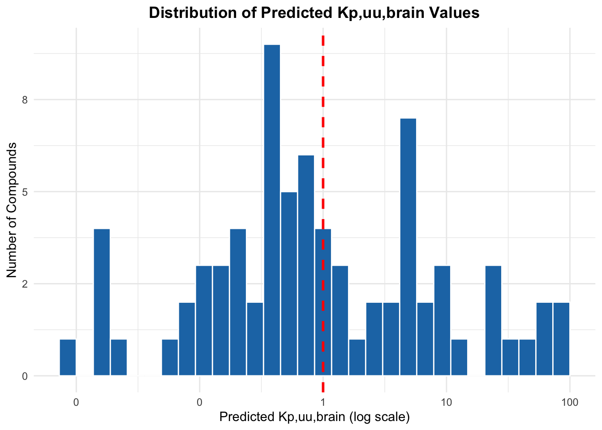
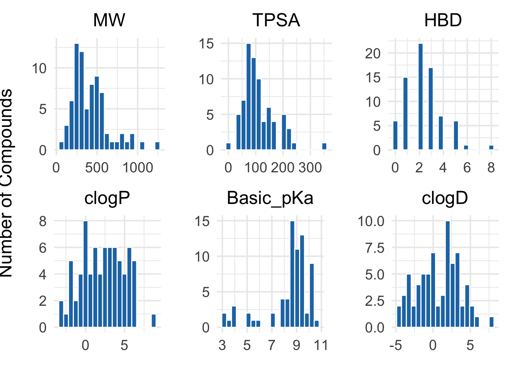
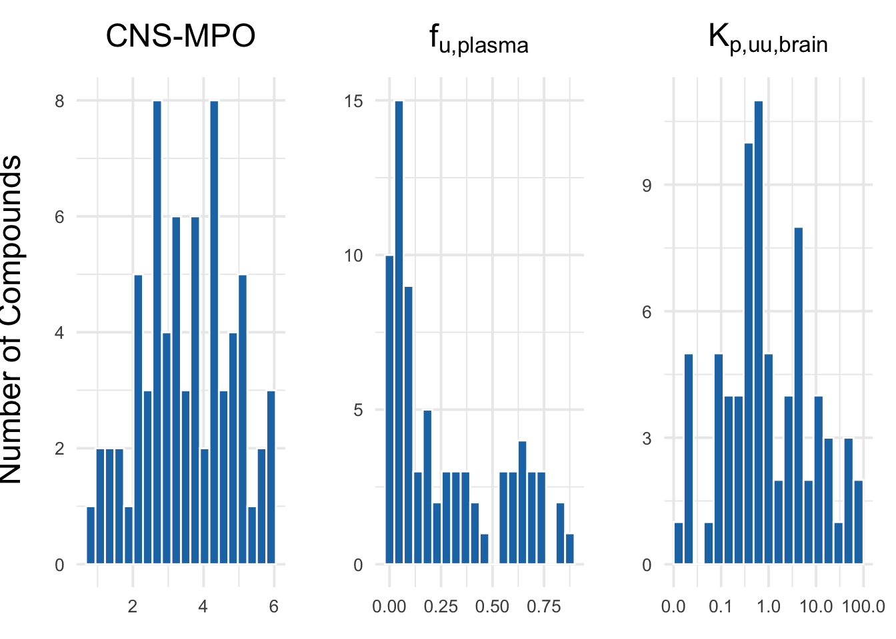
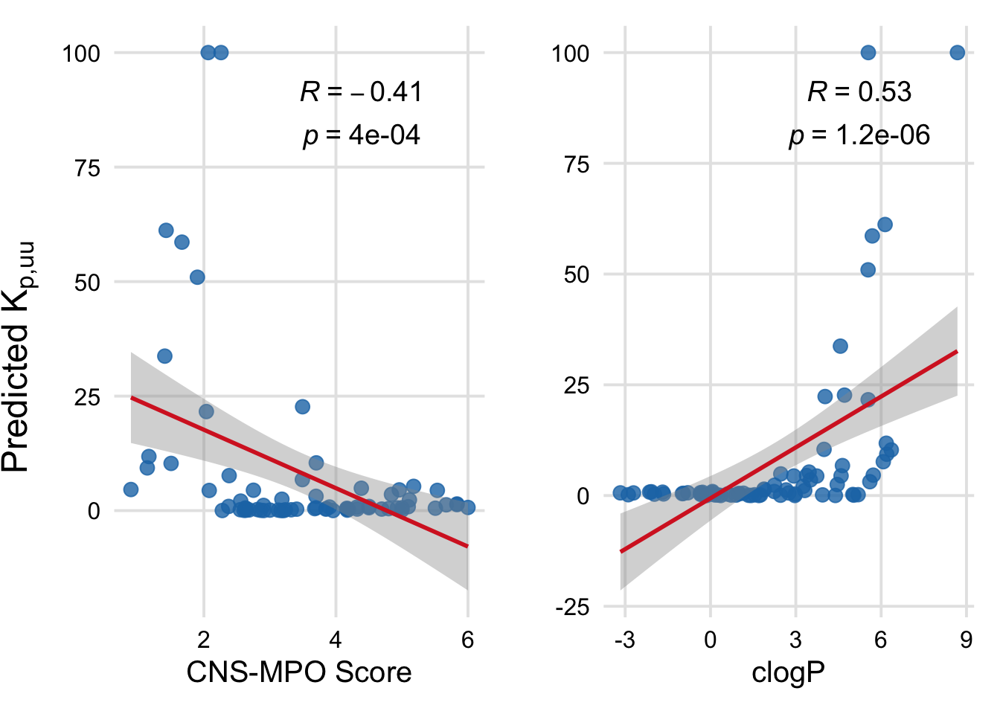
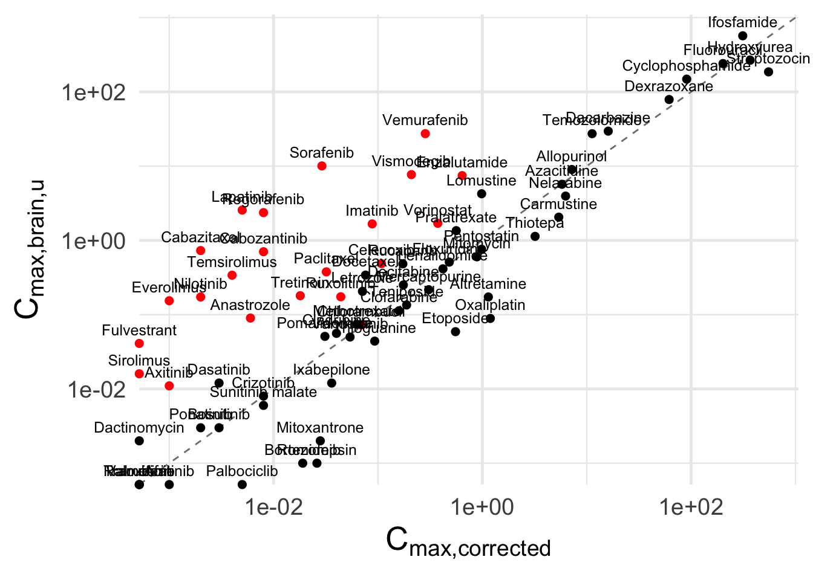
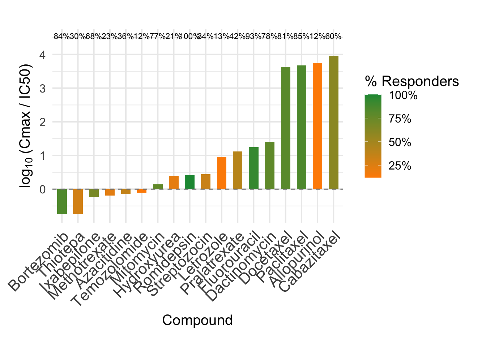
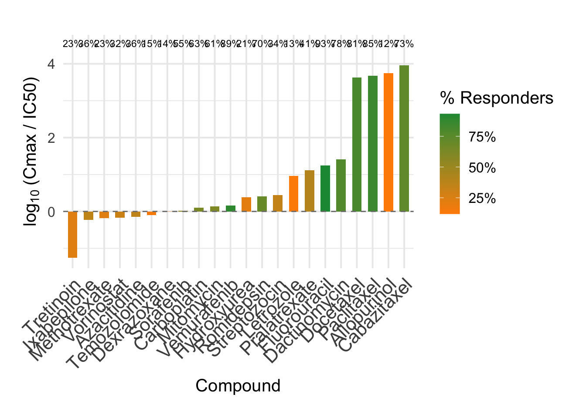
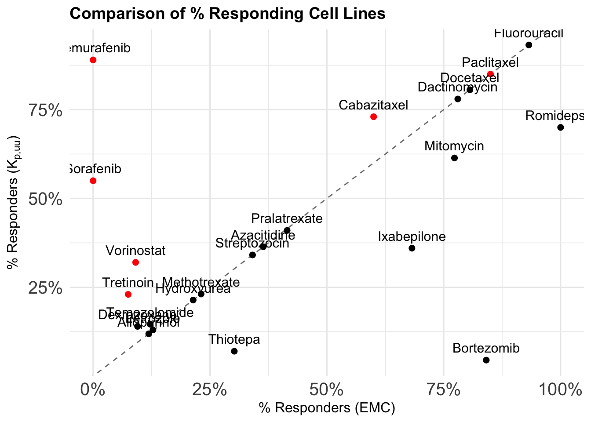
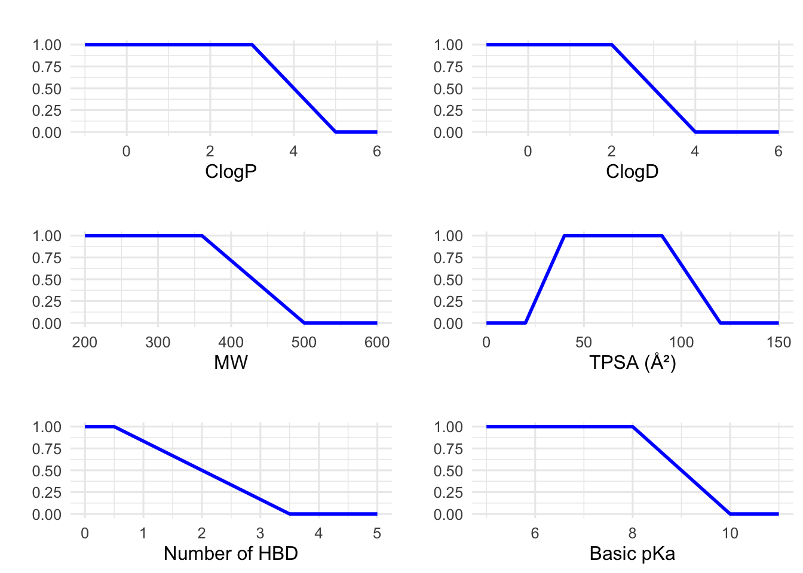
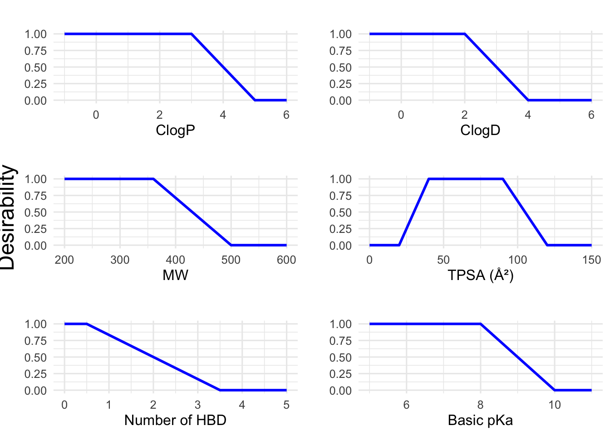

Code
# Load required libraries
library(ggplot2)
library(ggpubr)
library(ggrepel)
library(gridExtra)
library(scales)
library(patchwork)
library(dplyr)
library(cowplot)# Load required libraries
library(ggplot2)
library(ggpubr)
library(ggrepel)
library(gridExtra)
library(scales)
library(patchwork)
library(dplyr)
library(cowplot)# Read the CSV file into R
liston_compounds_exposure <- read.csv2("Liston_compounds_exposure_new.csv", stringsAsFactors = FALSE)
liston_compounds_exposure$CNS_MPO <- NULL
liston_compounds_desc <- read.csv("Liston_compounds_desc.csv")kp_distr <- ggplot(liston_compounds_exposure, aes(x = kp_uu_brain)) +
geom_histogram(bins = 30, fill = "#1f77b4", color = "white") +
scale_x_log10(labels = scales::label_number(accuracy = 1)) +
scale_y_continuous(labels = scales::label_number(accuracy = 1)) +
geom_vline(xintercept = 1, linetype = "dashed", color = "red", size = 1) +
labs(
title = "Distribution of Predicted Kp,uu,brain Values",
x = "Predicted Kp,uu,brain (log scale)",
y = "Number of Compounds"
) +
theme_minimal() +
theme(
plot.title = element_text(hjust = 0.5, face = "bold")
)
print(kp_distr)
# Save the combined plot as a high-resolution PNG
ggsave("kp_distribution.png",
plot = kp_distr,
width = 12, # Width in inches
height = 6, # Height in inches
dpi = 300, # High resolution
bg = "white") # Ensures background isn't transparent# Filter compounds with Kp_uu_brain > 20
high_kp_compounds <- liston_compounds_exposure[liston_compounds_exposure$kp_uu_brain > 3,
c("drug_name", "kp_uu_brain")]
# Filter compounds with Kp_uu_brain > 20
extreme_kp_compounds <- liston_compounds_exposure[liston_compounds_exposure$kp_uu_brain > 10,
c("drug_name", "kp_uu_brain")]
# View the result
print(high_kp_compounds) drug_name kp_uu_brain
4 Anastrozole 4.419873
5 Axitinib 6.766717
10 Cabazitaxel 33.728819
11 Cabozantinib 50.953898
14 Celecoxib 3.532626
15 Chlorambucil 4.526060
27 Enzalutamide 10.426431
29 Everolimus 9.326514
30 Exemestane 22.350920
33 Fulvestrant 100.000000
36 Imatinib 4.449903
38 Lapatinib 61.186255
47 Nilotinib 10.305157
49 Paclitaxel 4.405603
55 Raloxifene 7.641689
56 Regorafenib 58.614560
59 Ruxolitinib 5.300422
60 Sirolimus 11.811540
61 Sorafenib 100.000000
65 Temsirolimus 4.604663
70 Tretinoin 3.123296
73 Vemurafenib 21.628215
74 Vismodegib 22.677730
75 Vorinostat 4.885728# View the result
print(extreme_kp_compounds) drug_name kp_uu_brain
10 Cabazitaxel 33.72882
11 Cabozantinib 50.95390
27 Enzalutamide 10.42643
30 Exemestane 22.35092
33 Fulvestrant 100.00000
38 Lapatinib 61.18625
47 Nilotinib 10.30516
56 Regorafenib 58.61456
60 Sirolimus 11.81154
61 Sorafenib 100.00000
73 Vemurafenib 21.62822
74 Vismodegib 22.67773# Merge the dataframes by compound name
merged_df <- merge(liston_compounds_exposure, liston_compounds_desc,
by.x = "drug_name",
by.y = "compound")# Define the six descriptors
descriptors <- c("MW", "TPSA", "HBD", "clogP", "Basic_pKa", "clogD")
# Function to generate a consistent histogram plot
plot_descriptor <- function(df, column) {
ggplot(df, aes_string(x = column)) +
geom_histogram(bins = 20, fill = "#1f77b4", color = "white") +
theme_minimal(base_size = 15) +
labs(title = column, x = NULL, y = "") +
theme(
plot.title = element_text(hjust = 0.5),
axis.text = element_text(size = 14)
)
}
# Create individual plots as before
plots <- lapply(descriptors, function(col) plot_descriptor(merged_df, col))
# Combine them into a 2x3 patchwork
descriptors_histograms <- (plots[[1]] | plots[[2]] | plots[[3]]) /
(plots[[4]] | plots[[5]] | plots[[6]]) +
plot_annotation(theme = theme(plot.title = element_text(size = 18, face = "bold", hjust = 0.5)))
# Add global y-label using cowplot::ggdraw
descriptors_plot <- ggdraw(descriptors_histograms) +
draw_label("Number of Compounds", x = 0.01, y = 0.5, angle = 90, vjust = 0.5, fontface = "plain", size = 18)
# Show plot
print(descriptors_plot)
# Save plot with global y-axis label
ggsave("descriptors_histograms.png",
plot = descriptors_plot,
width = 12,
height = 8,
dpi = 300,
bg = "white")# Define column names and custom titles
cols <- c("CNS_MPO", "predicted_Fu", "kp_uu_brain")
titles <- list(
expression("CNS-MPO"),
expression(f[u*","*plain("plasma")]),
expression(K[p*","*plain("uu")*","*plain("brain")])
)
# Function to generate histograms
plot_hist <- function(data, col, title_expr) {
p <- ggplot(data, aes_string(x = col)) +
geom_histogram(bins = 20, fill = "#1f77b4", color = "white") +
theme_minimal(base_size = 15) +
labs(title = title_expr, x = NULL, y = "") +
theme(
plot.title = element_text(face = "bold", hjust = 0.5),
axis.text = element_text(size = 10)
)
if (col == "kp_uu_brain") {
p <- p +
scale_x_log10(labels = label_number(accuracy = 0.1))
}
return(p)
}
# Create plots
plots <- mapply(function(col, title_expr) plot_hist(merged_df, col, title_expr),
cols, titles, SIMPLIFY = FALSE)
# Combine plots using patchwork
predictions_histograms <- wrap_plots(plots, ncol = 3) +
plot_annotation(theme = theme(plot.title = element_text(size = 16, face = "bold", hjust = 0.5)))
# Add global y-axis label using cowplot
predictions_plot <- ggdraw(predictions_histograms) +
draw_label("Number of Compounds", x = 0.01, y = 0.5, angle = 90, vjust = 0.5, size = 18)
# Show the final plot
print(predictions_plot)
# Save with ggsave
ggsave("predictions_histograms.png",
plot = predictions_plot,
width = 12,
height = 6,
dpi = 300,
bg = "white")# Fit linear model
model <- lm(fraction_unbound ~ predicted_Fu, data = merged_df)
# Summary gives R-squared and significance
summary(model)
Call:
lm(formula = fraction_unbound ~ predicted_Fu, data = merged_df)
Residuals:
Min 1Q Median 3Q Max
-0.36115 -0.07410 -0.04113 0.01581 0.79399
Coefficients:
Estimate Std. Error t value Pr(>|t|)
(Intercept) 0.03132 0.03243 0.966 0.338
predicted_Fu 1.24192 0.09235 13.447 <2e-16 ***
---
Signif. codes: 0 '***' 0.001 '**' 0.01 '*' 0.05 '.' 0.1 ' ' 1
Residual standard error: 0.1947 on 68 degrees of freedom
(5 observations deleted due to missingness)
Multiple R-squared: 0.7267, Adjusted R-squared: 0.7227
F-statistic: 180.8 on 1 and 68 DF, p-value: < 2.2e-16# Remove rows with NA in either column
complete_df <- na.omit(merged_df[, c("fraction_unbound", "predicted_Fu")])
# Compute MSE
mse <- mean((complete_df$fraction_unbound - complete_df$predicted_Fu)^2)
print(paste("MSE:", round(mse, 4)))[1] "MSE: 0.0487"# Set theme for consistent look
custom_theme <- theme_minimal(base_size = 15) +
theme(
plot.title = element_text(face = "plain", hjust = 0.5),
axis.title = element_text(face = "plain"),
axis.text = element_text(color = "black"),
panel.grid.major = element_line(color = "grey90"),
panel.grid.minor = element_blank()
)
# Optional: align y-axis range across both plots
# y_lim <- c(min(merged_df$kp_uu_brain, na.rm = TRUE), max(merged_df$kp_uu_brain, na.rm = TRUE))
# Plot 1: CNS_MPO vs kp_uu_brain
plot1 <- ggplot(merged_df, aes(x = CNS_MPO, y = kp_uu_brain)) +
geom_point(color = "#1f77b4", size = 3, alpha = 0.8) +
geom_smooth(method = "lm", color = "#d62728", se = TRUE) +
stat_cor(method = "pearson",
label.x.npc = "middle", label.y.npc = "top",
size = 5, label.sep = "\n") +
labs(
x = "CNS-MPO Score",
y = ""
) +
custom_theme # + coord_cartesian(ylim = y_lim)
# Plot 2: clogP vs kp_uu_brain
plot2 <- ggplot(merged_df, aes(x = clogP, y = kp_uu_brain)) +
geom_point(color = "#1f77b4", size = 3, alpha = 0.8) +
geom_smooth(method = "lm", color = "#d62728", se = TRUE) +
stat_cor(method = "pearson",
label.x.npc = "middle", label.y.npc = "top",
size = 5, label.sep = "\n") +
labs(
x = "clogP",
y = ""
) +
custom_theme # + coord_cartesian(ylim = y_lim)
# Combine and add spacing
phys_vs_kp <- plot1 + plot2 + plot_layout(ncol = 2, widths = c(1, 1))
# Add global y-axis label using cowplot
phys_vs_kp_plot <- ggdraw(phys_vs_kp) +
draw_label(expression("Predicted "*K[p*","*plain("uu")]), x = 0.02, y = 0.5, angle = 90, vjust = 0.5, size = 18)
# Display
phys_vs_kp_plot
# Save the combined plot as a high-resolution PNG
ggsave("physicochemical_vs_kpuu.png",
plot = phys_vs_kp_plot,
width = 12, # Width in inches
height = 6, # Height in inches
dpi = 300, # High resolution
bg = "white") # Ensures background isn't transparentoutlier_compounds_desc <- merged_df[merged_df$kp_uu_brain > 10, c("drug_name", "MW", "TPSA", "HBD", "clogP", "Basic_pKa", "clogD", "CNS_MPO", "kp_uu_brain")]
outlier_compounds_desc <- outlier_compounds_desc %>%
mutate(across(where(is.numeric), ~ round(.x, 2)))
write.csv(outlier_compounds_desc, file="outlier_compounds_desc.csv", row.names = FALSE)# Prepare data with color based on kp_uu_brain
plot_df <- merged_df %>%
filter(!drug_name %in% c("Busulfan", "Carboplatin", "Cisplatin", "Exemestane")) %>%
mutate(
dot_color = ifelse(kp_uu_brain > 3, "red", "black"),
label = drug_name
)
# Make the scatterplot
scatter_plot_concentrations <- ggplot(plot_df, aes(
x = unbound_brain_cmax_micromolar_emc,
y = unbound_brain_cmax_micromolar_kp
)) +
# Add 1:1 diagonal line
geom_abline(slope = 1, intercept = 0, linetype = "dashed", color = "gray50") +
# Add points with color depending on kp_uu_brain
geom_point(aes(color = dot_color), size = 2) +
# Optional: Add labels
geom_text(aes(label = label), vjust = -0.8, size = 3.3) +
# Manual color scale
scale_color_identity() +
coord_cartesian(clip = "off") +
# Log10 scales for both axes
scale_x_log10() +
scale_y_log10() +
labs(
x = expression(C[max*","*plain("corrected")]),
y = expression(C[max*","*plain("brain")*","*plain("u")])
) +
theme_minimal(base_size = 18) +
theme(
axis.title.x = element_text(size = 20),
axis.title.y = element_text(size = 20)
)
# Show the plot
print(scatter_plot_concentrations)
# Save the combined plot as a high-resolution PNG
ggsave("concentrations_comparison.png",
plot = scatter_plot_concentrations,
width = 12, # Width in inches
height = 8, # Height in inches
dpi = 300, # High resolution
bg = "white") # Ensures background isn't transparent# Prepare the data
promising_df <- merged_df %>%
dplyr::filter(responders_emc > 0.1) %>%
dplyr::mutate(
drug_name = reorder(drug_name, log10(cmax_IC50_kp)),
responders_emc_label = scales::percent(responders_emc, accuracy = 1),
valid_IC50_label = scales::percent(valid_IC50, accuracy = 1)
)
# Compute label positions
y_label_pos <- max(log10(promising_df$cmax_IC50_kp), na.rm = TRUE) + 0.5
y_lim <- y_label_pos + 1.2
x_label_pos <- nrow(promising_df) - 1 + 0.5
exposure_plot_emc <- ggplot(promising_df, aes(x = drug_name)) +
# Vertical bars
geom_col(aes(y = log10(cmax_IC50_kp), fill = responders_emc), width = 0.6) +
# Dashed line at exposure = IC50
geom_hline(yintercept = 0, linetype = "dashed", color = "gray50") +
# responders_emc % text above each bar
geom_text(
aes(y = y_label_pos, label = responders_emc_label),
vjust = 0, size = 3
) +
# Fill color scale for % responders_emc
scale_fill_gradient(
low = "#ff8c00", high = "#1a9641", name = "% Responders",
labels = scales::percent_format(accuracy = 1)
) +
labs(
x = "Compound",
y = expression(log[10]~"(Cmax / IC50)")
) +
theme_minimal(base_size = 15) +
theme(
axis.text.x = element_text(size = 16, angle = 45, hjust = 1),
legend.position = "right",
plot.margin = margin(t = 30, r = 20, b = 20, l = 20)
) +
ylim(min(log10(promising_df$cmax_IC50_kp), na.rm = TRUE), 4.5)
exposure_plot_emc
# Save the combined plot as a high-resolution PNG
ggsave("exposure-efficacy-emc.png",
plot = exposure_plot_emc,
width = 12, # Width in inches
height = 6, # Height in inches
dpi = 300, # High resolution
bg = "white") # Ensures background isn't transparent# Prepare the data
promising_df <- merged_df %>%
dplyr::filter(responders_kp > 0.1) %>%
dplyr::mutate(
drug_name = reorder(drug_name, log10(cmax_IC50_kp)),
responders_kp_label = scales::percent(responders_kp, accuracy = 1),
valid_IC50_label = scales::percent(valid_IC50, accuracy = 1)
)
# Compute label positions
y_label_pos <- max(log10(promising_df$cmax_IC50_kp), na.rm = TRUE) + 0.5
y_lim <- y_label_pos + 1.2
x_label_pos <- nrow(promising_df) - 1 + 0.5
exposure_plot_kp <- ggplot(promising_df, aes(x = drug_name)) +
# Vertical bars
geom_col(aes(y = log10(cmax_IC50_kp), fill = responders_kp), width = 0.6) +
# Dashed line at exposure = IC50
geom_hline(yintercept = 0, linetype = "dashed", color = "gray50") +
# responders_kp % text above each bar
geom_text(
aes(y = y_label_pos, label = responders_kp_label),
vjust = 0, size = 3
) +
# Fill color scale for % responders_kp
scale_fill_gradient(
low = "#ff8c00", high = "#1a9641", name = "% Responders",
labels = scales::percent_format(accuracy = 1)
) +
labs(
x = "Compound",
y = expression(log[10]~"(Cmax / IC50)")
) +
theme_minimal(base_size = 15) +
theme(
axis.text.x = element_text(size = 16, angle = 45, hjust = 1),
legend.position = "right",
plot.margin = margin(t = 30, r = 20, b = 20, l = 20)
) +
ylim(min(log10(promising_df$cmax_IC50_kp), na.rm = TRUE), 4.5)
exposure_plot_kp
# Save the combined plot as a high-resolution PNG
ggsave("exposure-efficacy-kp.png",
plot = exposure_plot_kp,
width = 12, # Width in inches
height = 6, # Height in inches
dpi = 300, # High resolution
bg = "white") # Ensures background isn't transparent# Prepare the data
plot_df <- merged_df %>%
filter(responders_emc > 0.1 | responders_kp > 0.1) %>%
mutate(
dot_color = ifelse(kp_uu_brain > 3, "red", "black"),
label = drug_name
)
# Make the scatter plot
scatter_plot_responders <- ggplot(plot_df, aes(
x = responders_emc,
y = responders_kp
)) +
# Add 1:1 diagonal line
geom_abline(slope = 1, intercept = 0, linetype = "dashed", color = "gray50") +
# Add points with custom coloring
geom_point(aes(color = dot_color), size = 2) +
# Optional: Add labels
geom_text(aes(label = label), vjust = -0.8, size = 4) +
# Manual color scale (red = high kp_uu_brain)
scale_color_identity() +
# Format % axes
scale_x_continuous(labels = percent_format(accuracy = 1)) +
scale_y_continuous(labels = percent_format(accuracy = 1)) +
# Labels and theme
labs(
title = "Comparison of % Responding Cell Lines",
x = "% Responders (EMC)",
y = expression("% Responders (" *K[p*","*plain("uu")]*")")
) +
theme_minimal(base_size = 12) +
theme(
plot.title = element_text(face = "bold", size = 14),
axis.text = element_text(size = 15)
)
# Show the plot
print(scatter_plot_responders)
# Save the combined plot as a high-resolution PNG
ggsave("responders_comparison.png",
plot = scatter_plot_responders,
width = 12, # Width in inches
height = 8, # Height in inches
dpi = 300, # High resolution
bg = "white") # Ensures background isn't transparent# -----------------------------
# Define transformation functions
# -----------------------------
# For properties with a monotonic-decreasing transformation:
monotonic_decreasing <- function(x, ideal, cutoff) {
# x: numeric vector of property values
# ideal: values <= ideal get a score of 1
# cutoff: values >= cutoff get a score of 0
y <- rep(NA, length(x))
y[x <= ideal] <- 1
y[x >= cutoff] <- 0
middle <- (x > ideal) & (x < cutoff)
y[middle] <- (cutoff - x[middle]) / (cutoff - ideal)
return(y)
}
# For TPSA, which follows a hump function:
hump_function_TPSA <- function(x, lower_cutoff, lower_ideal, upper_ideal, upper_cutoff) {
# Returns 0 if x <= lower_cutoff or x >= upper_cutoff.
# Returns 1 if x is between lower_ideal and upper_ideal.
# And linearly interpolates between lower_cutoff->lower_ideal and upper_ideal->upper_cutoff.
y <- rep(NA, length(x))
y[x <= lower_cutoff | x >= upper_cutoff] <- 0
lower_region <- (x > lower_cutoff) & (x < lower_ideal)
y[lower_region] <- (x[lower_region] - lower_cutoff) / (lower_ideal - lower_cutoff)
ideal_region <- (x >= lower_ideal) & (x <= upper_ideal)
y[ideal_region] <- 1
upper_region <- (x > upper_ideal) & (x < upper_cutoff)
y[upper_region] <- (upper_cutoff - x[upper_region]) / (upper_cutoff - upper_ideal)
return(y)
}
# -----------------------------
# Create data frames for each parameter with appropriate ranges:
# -----------------------------
# 1. ClogP: Ideal ≤3, cutoff ≥5.
df_clogP <- data.frame(x = seq(-1, 6, by = 0.1))
df_clogP$desirability <- monotonic_decreasing(df_clogP$x, ideal = 3, cutoff = 5)
# 2. ClogD: Ideal ≤2, cutoff ≥4.
df_clogD <- data.frame(x = seq(-1, 6, by = 0.1))
df_clogD$desirability <- monotonic_decreasing(df_clogD$x, ideal = 2, cutoff = 4)
# 3. Molecular Weight (MW): Ideal ≤360, cutoff ≥500.
df_MW <- data.frame(x = seq(200, 600, by = 5))
df_MW$desirability <- monotonic_decreasing(df_MW$x, ideal = 360, cutoff = 500)
# 4. TPSA: Hump function with lower cutoff 20, lower ideal 40, upper ideal 90, upper cutoff 120.
df_TPSA <- data.frame(x = seq(0, 150, by = 1))
df_TPSA$desirability <- hump_function_TPSA(df_TPSA$x, lower_cutoff = 20, lower_ideal = 40, upper_ideal = 90, upper_cutoff = 120)
# 5. HBD: Ideal ≤0.5, cutoff ≥3.5.
df_HBD <- data.frame(x = seq(0, 5, by = 0.1))
df_HBD$desirability <- monotonic_decreasing(df_HBD$x, ideal = 0.5, cutoff = 3.5)
# 6. Basic pKa: Ideal ≤8, cutoff ≥10.
df_pKa <- data.frame(x = seq(5, 11, by = 0.1))
df_pKa$desirability <- monotonic_decreasing(df_pKa$x, ideal = 8, cutoff = 10)
# -----------------------------
# Generate plots using ggplot2:
# -----------------------------
p_clogP <- ggplot(df_clogP, aes(x = x, y = desirability)) +
geom_line(size = 1, color = "blue") +
labs(title = "", x = "ClogP", y = "") +
theme_minimal(base_size = 12)
p_clogD <- ggplot(df_clogD, aes(x = x, y = desirability)) +
geom_line(size = 1, color = "blue") +
labs(title = "", x = "ClogD", y = "") +
theme_minimal(base_size = 12)
p_MW <- ggplot(df_MW, aes(x = x, y = desirability)) +
geom_line(size = 1, color = "blue") +
labs(title = "", x = "MW", y = "") +
theme_minimal(base_size = 12)
p_TPSA <- ggplot(df_TPSA, aes(x = x, y = desirability)) +
geom_line(size = 1, color = "blue") +
labs(title = "", x = "TPSA (Ų)", y = "") +
theme_minimal(base_size = 12)
p_HBD <- ggplot(df_HBD, aes(x = x, y = desirability)) +
geom_line(size = 1, color = "blue") +
labs(title = "", x = "Number of HBD", y = "") +
theme_minimal(base_size = 12)
p_pKa <- ggplot(df_pKa, aes(x = x, y = desirability)) +
geom_line(size = 1, color = "blue") +
labs(title = "", x = "Basic pKa", y = "") +
theme_minimal(base_size = 12)
# -----------------------------
# Arrange all plots in a grid
# -----------------------------
desirability_plot <- grid.arrange(p_clogP, p_clogD, p_MW, p_TPSA, p_HBD, p_pKa, ncol = 2)
# Add global y-axis label using cowplot
desirability_plot_final <- ggdraw(desirability_plot) +
draw_label("Desirability", x = 0.01, y = 0.5, angle = 90, vjust = 0.5, size = 18)
# Display
desirability_plot_final
# Save the combined plot as a high-resolution PNG
ggsave("desirability_ranges.png",
plot = desirability_plot_final,
width = 12, # Width in inches
height = 8, # Height in inches
dpi = 300, # High resolution
bg = "white") # Ensures background isn't transparent